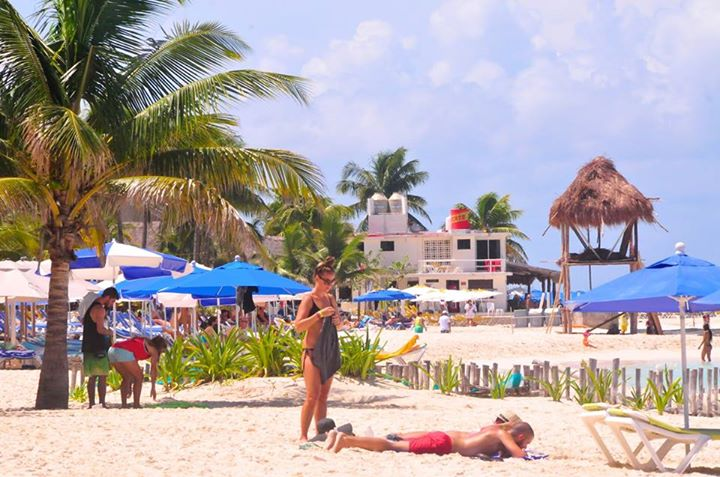
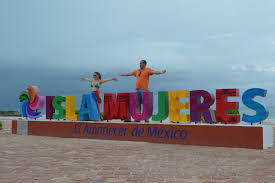

Enriqueta Flores:
Me encanta isla Mujeres, muy buen lugar para quedarse un fin de
semana, puedes rentar carrito de golf y tomar fotos en los increíbles
paisajes que ofrece la isla, también cuenta con un parque llamado
garrafón muy bonito, en la punta norte el agua tan calmada q parece q
estás en una alberca. Muchas gracias a Impluso nómada por hacerlo
posible.

Julissa Solano:
Si no fuera por Impulso Nómada me habría
perdido una de las mejores experiencias de mi vida. Hermosa
isla..agua cristalina turquesa llena de peces. Una maravilla a la
vista!! Hay juegos...piletas...snorkel.tirolesa..en fin para
divertirse todo un dia!

Jaime Salinas:
Ciertamente es una experiencia increíble
la que pasamos mi esposa Saida y yo, aguas verdaderamente cristalinas,
arenas blancas, encontraras excelente menú, contemplas la
majestuosidad de la belleza , nos tocó una llovizna suave viendo el
arcoíris formarse...si vas a México no dejes de visitar Isla
Mujeres de la mano de Impulso nómada, les fascinará